R$ 1.100/mês — sem necessidade de fiador
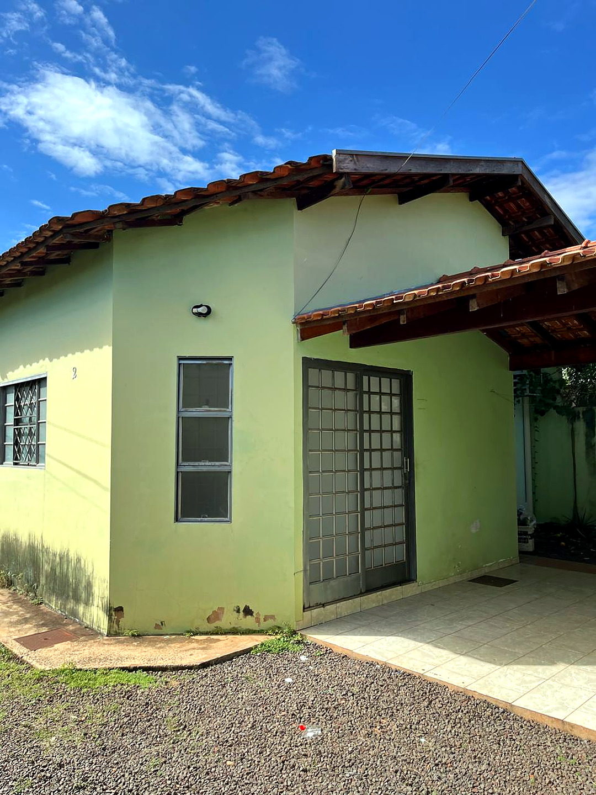
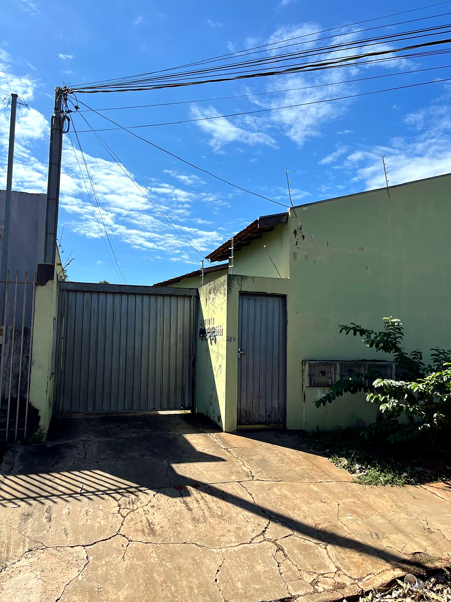
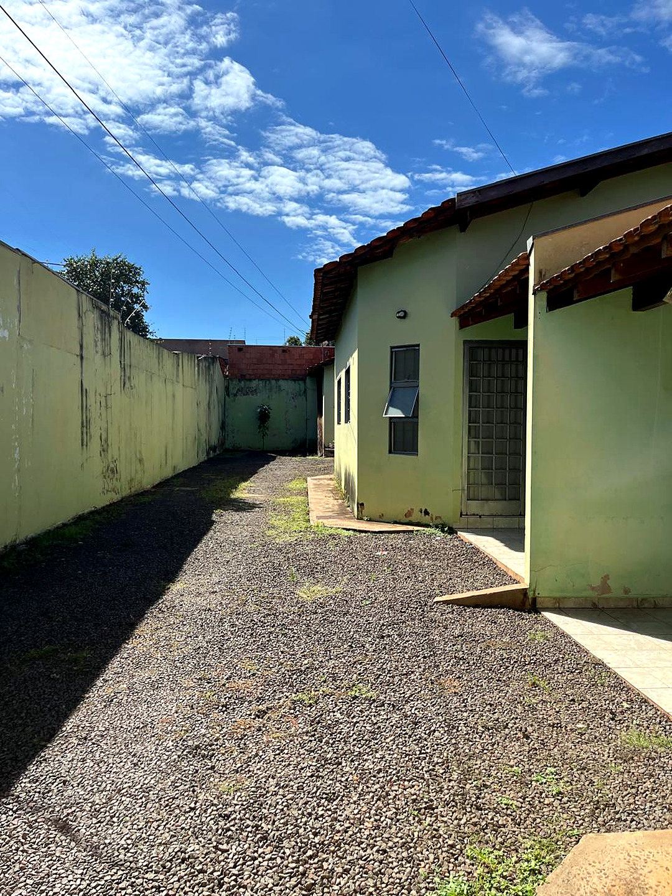
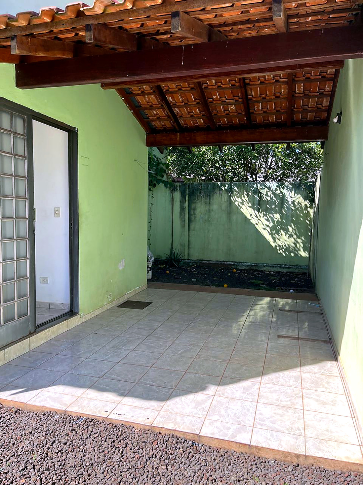
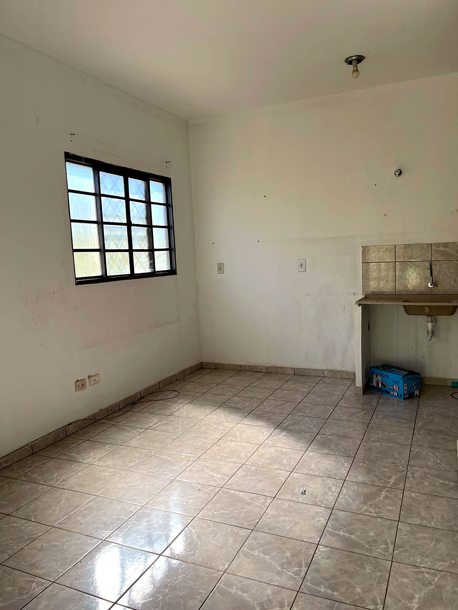
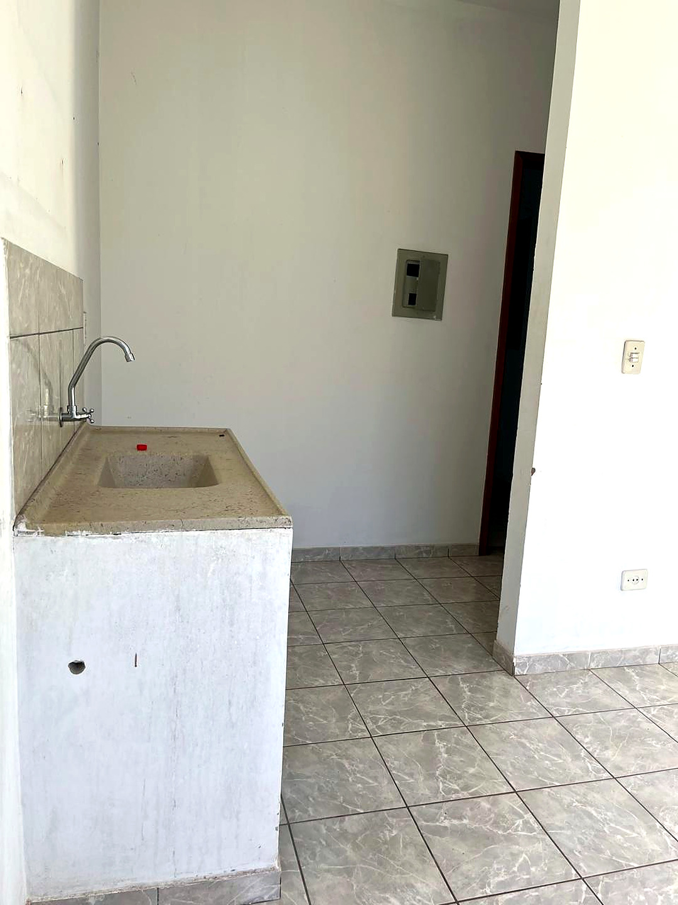
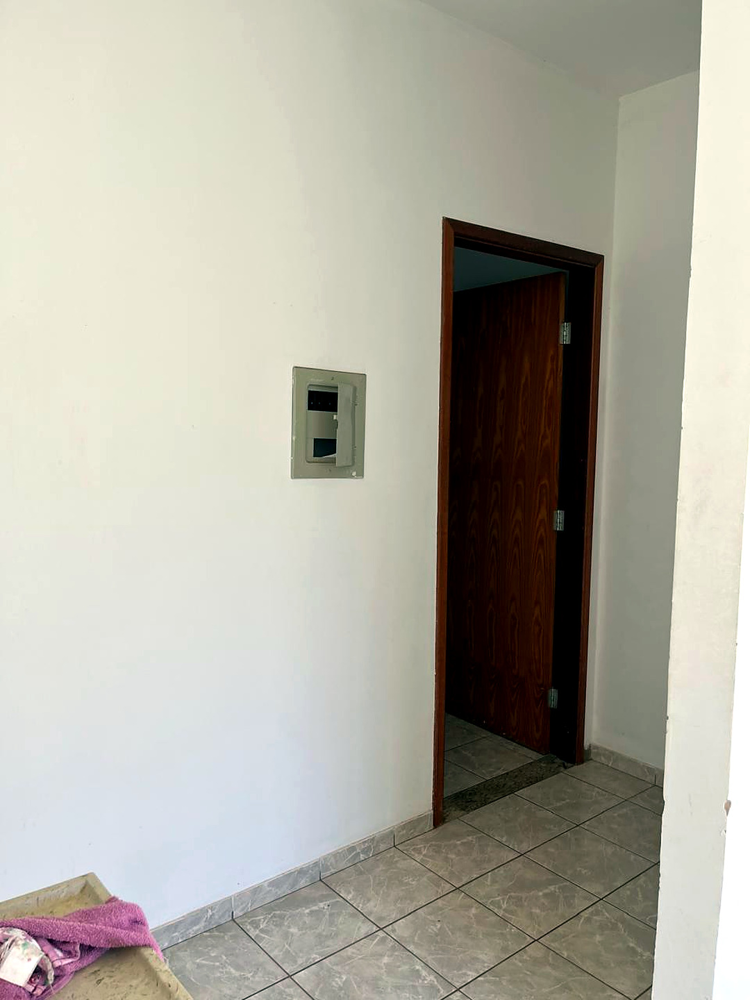
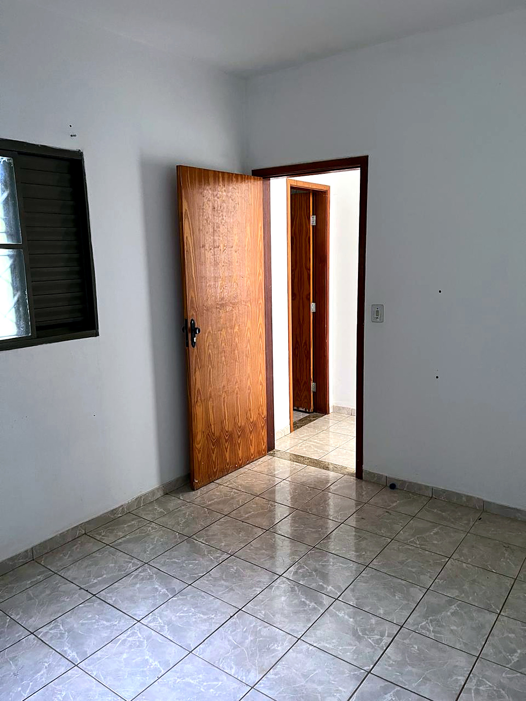
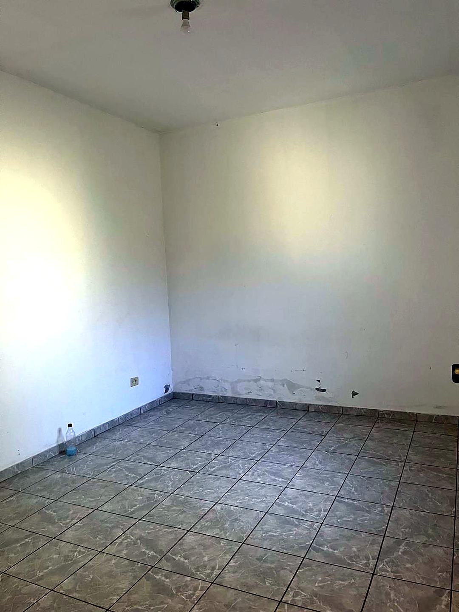
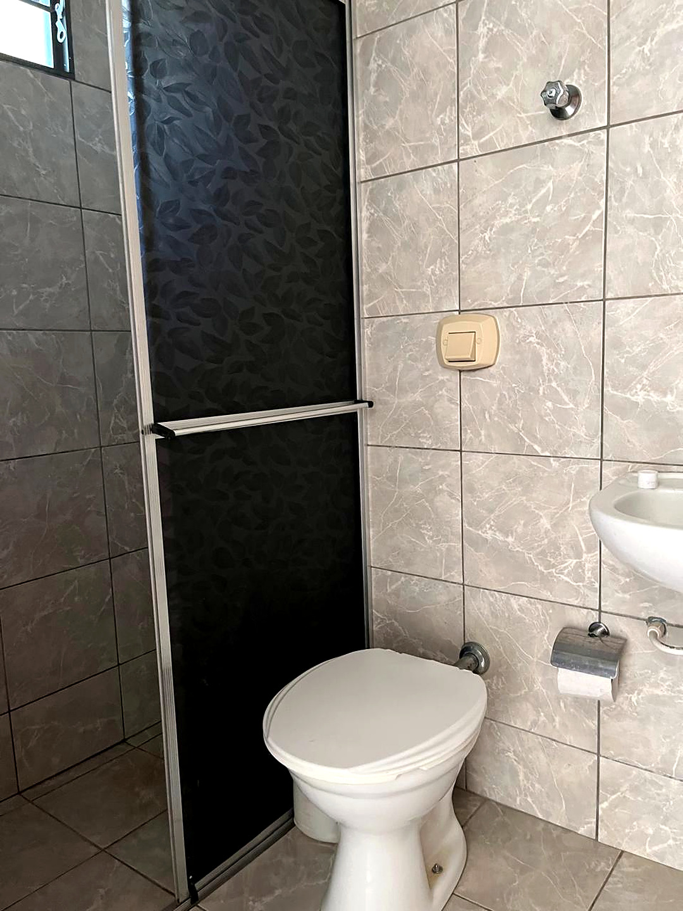
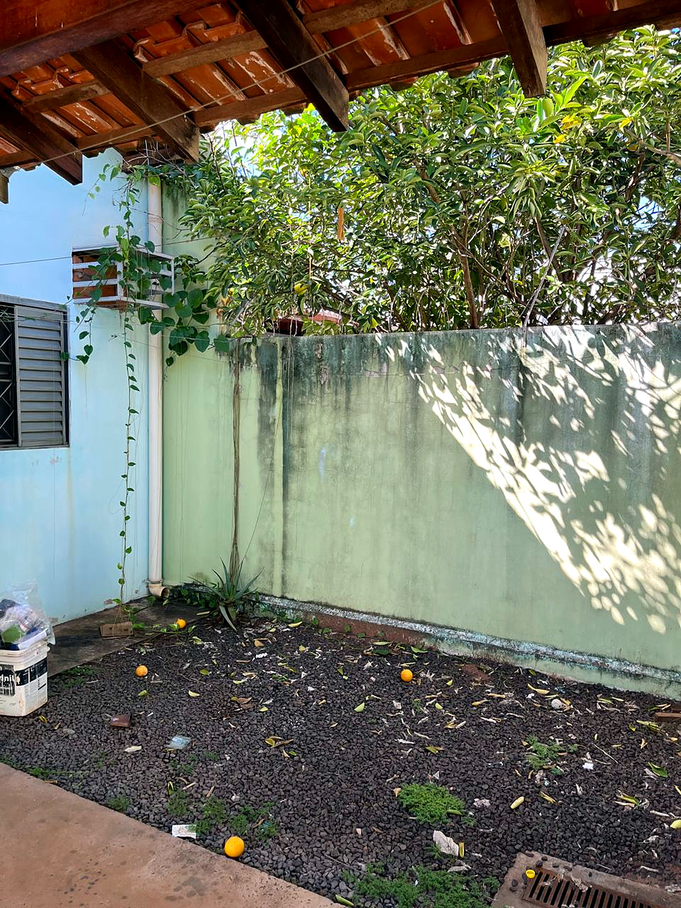
Casa de vila aconchegante para locação na Rua Meruce, 287 (Casa 03) - Parque Residencial Maria Aparecida Pedrossian, Campo Grande/MS. Ideal para solteiros ou casais.
CARACTERÍSTICAS DO IMÓVEL:
- 1 quarto
- Sala e cozinha integradas
- Banheiro social com box
- Área de serviço e quintal nos fundos
- 1 vaga de garagem coberta
- Vila residencial tranquila com apenas 4 casas
LOCALIZAÇÃO:
- Próximo ao Mercado Ki Preço, Mercado Santo Antônio e Praça dos Amigos
- Fácil acesso a comércios e serviços do bairro
VALORES E CONDIÇÕES:
- Aluguel mensal: R$ 1.100,00
- Sem necessidade de fiador
- Exigida comprovação de renda e ausência de restrições no SPC/Serasa
- Não aceita animais
Informações e agendamento de visitas:
Felipe Mendes | CRECI-MS 15588-F